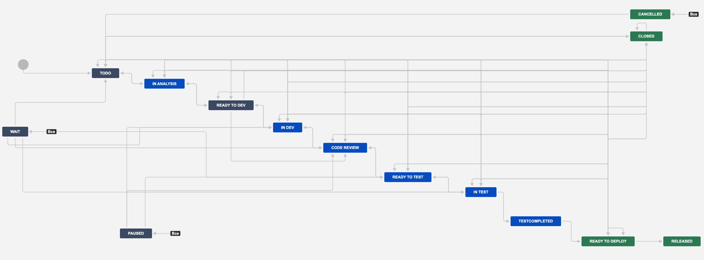

Детально про метрики можно почитать тут
Краткая выдержка ниже...
Объектом наблюдения и оптимизации являются
CT' - Cycle Time' (Время цикла "штрих")
Время, прошедшее с момента, как задачу запланировали в работу (перешел в состояние In Analysis или правее) и до момента, когда задача перешла в состояние готовности к выпуску (перешел в состояние Ready To Deploy/Test Completed) без учета времени, проведенного в состояниях ToDo.
Считается как сумма времени проведенных эпиком в следующих статусах:
In Analysis, Ready To Dev + In Dev, Code Review, Ready To Test + In Test
CT - Cycle Time (Время цикла)
Время, прошедшее с момента, как задачу запланировали в работу (перешел в состояние In Analysis или правее) и до момента, когда задача перешла в состояние готовности к выпуску (перешел в состояние Released) без учета времени, проведенного в состояниях ToDo.
Считается как сумма времени проведенных эпиком в следующих статусах:
In Analysis, Ready To Dev + In Dev, Code Review, Ready To Test + In Test + Test Completed, Ready To Deploy
